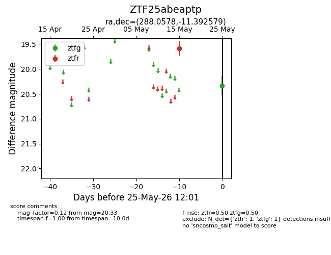
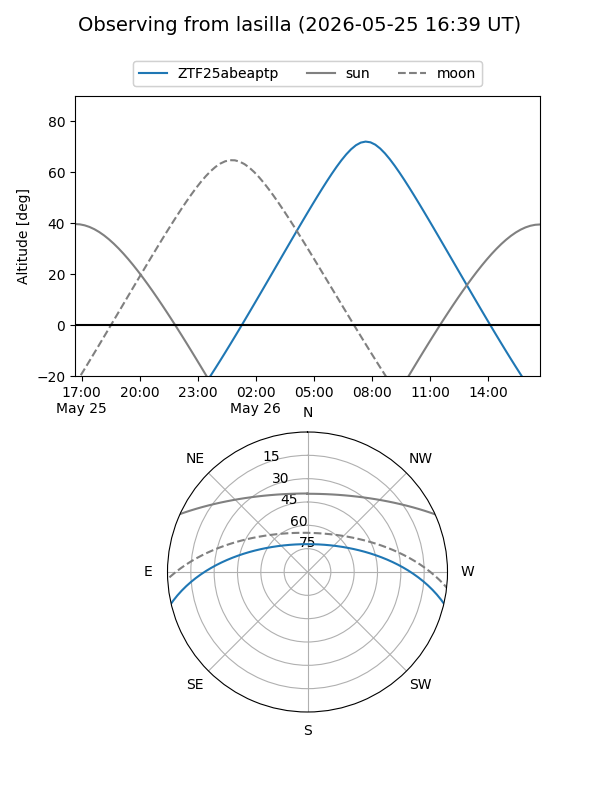
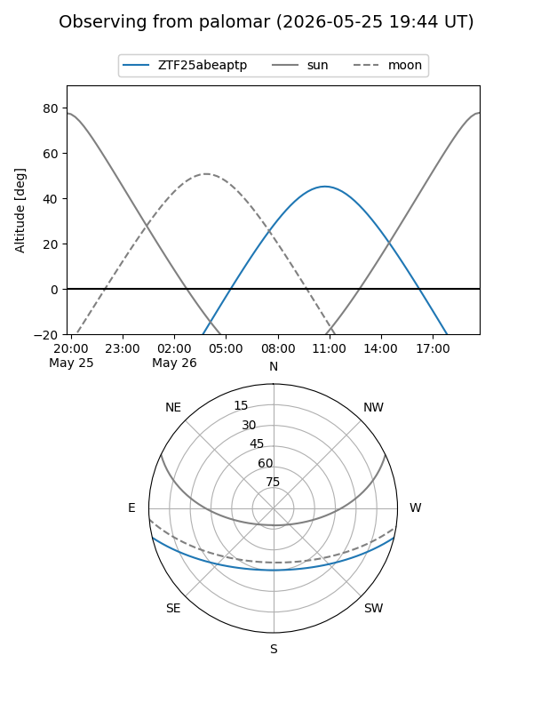

ZTF25abeaptp
Target ZTF25abeaptp at 2026-05-25 12:02
Aliases and brokers:
lsst-FINK: link
lsst-Lasair: link
lsst-ALeRCE: link
ztf-FINK: link
ztf-Lasair: link
ztf-ALeRCE: link
alt names
ZTF25abeaptp (ztf,fink_ztf)
Coordinates:
equatorial (ra, dec) = 288.0578,-11.39258
equatorial (HMS+DMS) = 19:12:13.88,-11:23:33.28
galactic (l, b) = (25.0416,-9.73655)
Flags:
Photometry:
last ztfg=20.33, ztfr=19.58
1 ztfg, 1 ztfr detections
Lightcurve

Visibility


Additional plots